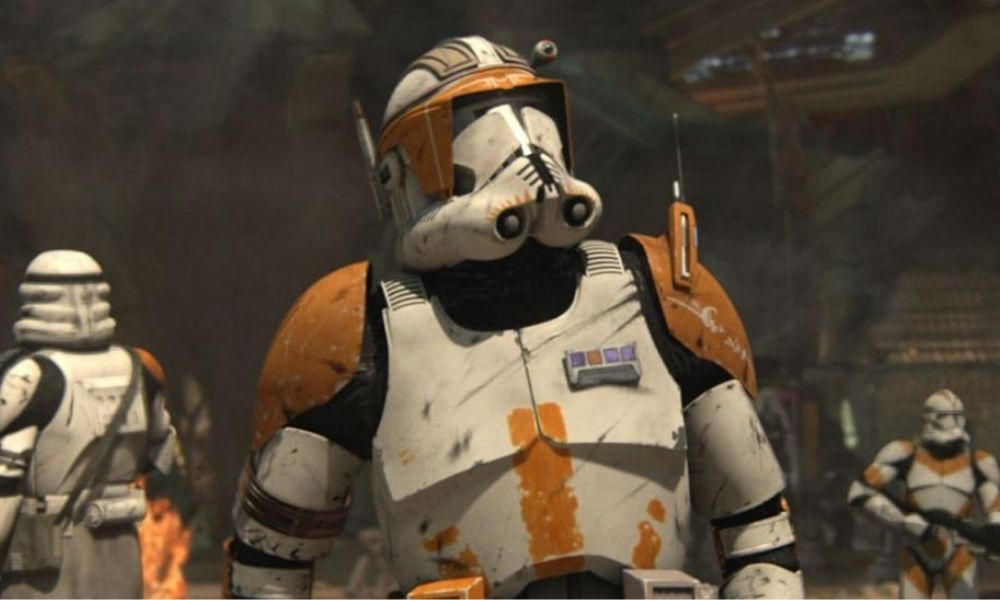

Soldado Cody
CC-2224, apodado «Cody», fue un oficial soldado clon que poseía el rango militar de Comandante Mariscal en el Gran Ejército de la República durante las Guerras Clon. Adicionalmente, sirvió como el oficial al mando del 7º Cuerpo Aéreo y lideró personalmente el 212º Batallón de Ataque. Un líder natural y práctico, el comandante Cody era el segundo al mando del General Jedi Obi-Wan Kenobi, a quien era particularmente leal. Un estratega capaz y un soldado excepcional en el campo de batalla, sus habilidades le hicieron ganarse el respeto de tanto sus oficiales Jedi como el resto de soldados clon.
Creado a partir de la plantilla genética del cazarrecompensas humano Jango Fett, Cody era parte de un ejército de clones genéticamente iguales diseñados en secreto en el planeta extragaláctico Kamino durante los últimos años de la República Galáctica. Tras la primera batalla de las Guerras Clon en el 22 ABY, Cody y los demás clones fueron desplegados por toda la galaxia para defender a la República Galáctica de la secesionista Confederación de Sistemas Independientes. Desde la liberación de Christophsis hasta la segunda invasión de Geonosis, el batallón del comandante Cody y el general Kenobi se forjó una excelente reputación en los ataques frontales así como por sus tácticas de asedio durante los primeros meses del conflicto. A menudo sirvieron junto a la Legión 501; liderada por el General Jedi Anakin Skywalker, el antiguo Padawan de Kenobi, y el Capitán Clon CT-7567 «Rex», un amigo de Cody.

Volver a pagina principal